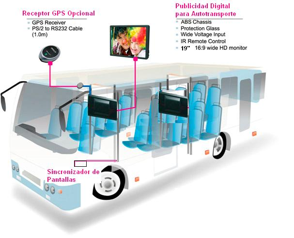

Taller de Disign Thiking
En esta primera parte abarcaremos el primer objetivo de esta metodología que se trata de adquirir conocimientos básicos sobre los usuarios y sobre la situación actual y los problemas que afrontas .Por ello en este documento encontrara las dos problemas que el grupo encontró como falencia en el Instituto Superior TECSUP.
Documento